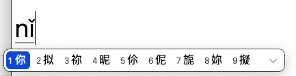

Typing Pinyin Chinese
MacOS comes with a full input method for typing Chinese characters, and Apple provides this Guide for using it.
Sometimes users want to type Chinese text in its transliterated form, called Pinyin, which uses Latin characters plus diacritical marks to indicate tones. Unfortunately the Accent Menu and option key shortcuts on the standard US English input source are missing one of these marks (the haček or caron), which is used for the 3rd tone. Below are two ways to enable typing Pinyin with the correct diacritics for all tones.
+ABC Extended Input Source: If you activate this layout, found among the other English input sources, you can make the four tones via Option key shortcuts. For example
Option a, then a produces ā
Option e, then a produces á
Option v, then a produces ǎ
Option `, then a produces à
+Chinese Pinyin IM: While working in one of Apple's Chinese Pinyin keyboards, with the candidate window horizontal, you can type some pinyin and then press the Tab key from one to four times. The Pinyin you typed will successively show the 4 tone options, and you can just press return to enter the one you want. Below shows "ni" plus 3 tabs.

If you use the vertical candidate window, type Option Tab instead of Tab.
Note that to get "nü" you type "nv".